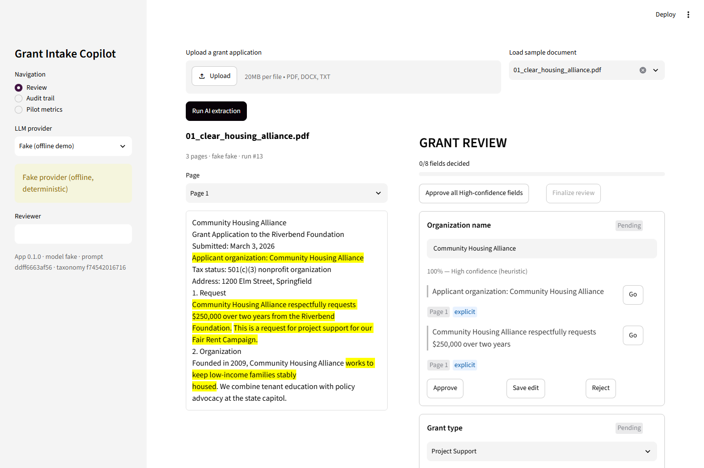
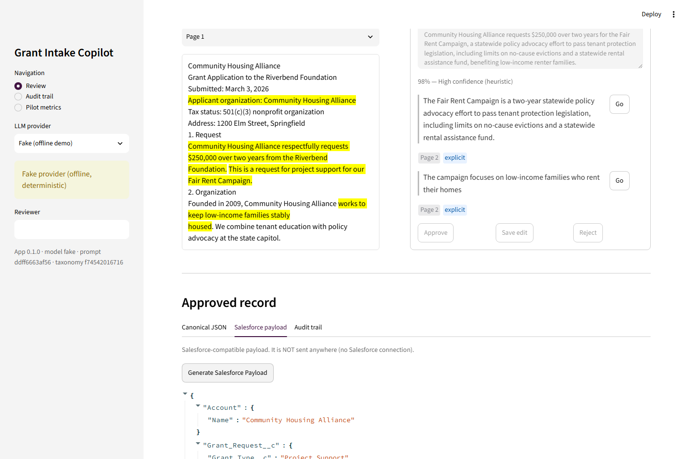
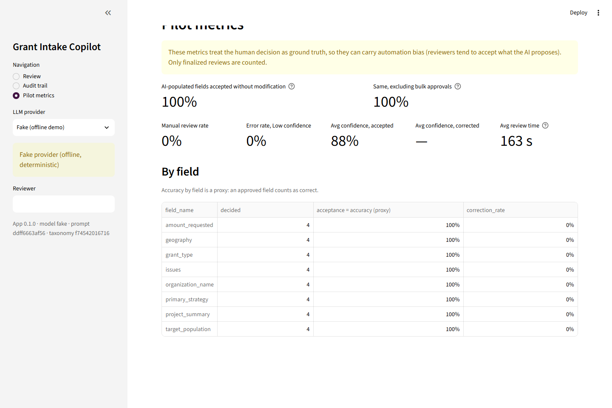

Extrae texto de PDF/DOCX/TXT, clasifica 8 campos contra taxonomías cerradas, muestra evidencia verificable y confidence por campo, exige revisión humana, y produce un objeto canónico y un payload de Salesforce — sin conectarse nunca a Salesforce.
El objetivo no es reemplazar Salesforce ni integrarse en producción todavía. Es demostrar, de punta a punta, que se puede tomar una solicitud real, extraer información con evidencia trazable, y producir un registro listo para enviarse — con una persona validando cada decisión relevante.
SalesforceAdapter que genera el payload y lo muestra — sin llamarlo.La IA, la clasificación y la validación humana no saben que Salesforce existe. Solo el
SalesforceAdapter, guiado por salesforce_mapping.yaml, conoce ese formato — y en
esta fase solo genera el payload, nunca lo envía.
flowchart LR
U[Upload PDF/DOCX/TXT
o sample] --> I[ingestion.py
validación + texto por página]
I --> P[pipeline.py
schema dinámico + 1 llamada LLM]
P --> L{{LLMProvider}}
L --> G[Gemini · Claude ·
OpenAI · DeepSeek]
L --> F[FakeLLMProvider]
P --> E[Verificación de evidencia
página real, verified]
E --> C[confidence.py
heuristic-v1]
C --> R[review.py
Human Review en Streamlit]
R --> A[ApprovedGrantApplication
JSON canónico]
A --> S[SalesforceAdapter
salesforce_mapping.yaml]
S --> PL[Salesforce payload]
PL -.-> SF[Future Salesforce API]
R --> DB[(SQLite / PostgreSQL
audit trail)]
A --> DB
style S stroke-dasharray: 5 5
style SF stroke-dasharray: 5 5
| Archivo | Responsabilidad |
|---|---|
app.py | UI Streamlit (Review, Audit trail, Pilot metrics). Solo renderiza y llama a src/. |
src/config.py | Carga los YAML y .env; calcula prompt_version y taxonomy_version. |
src/models.py | Enums y modelos Pydantic: predicción IA vs. objeto aprobado por humano. |
src/ingestion.py | Validación del upload y extracción de texto por página o sección. |
src/llm.py | Protocolo LLMProvider: Gemini, Claude, OpenAI, DeepSeek y un proveedor Fake determinista. |
src/pipeline.py | Schema dinámico, prompt, llamada, verificación de citas y armado del resultado. |
src/confidence.py | Scorer heurístico puro y reemplazable por uno calibrado. |
src/review.py | Decisiones, reglas de bloqueo, finalización y generación del payload. |
src/salesforce_adapter.py | Único módulo del proyecto que conoce el formato de Salesforce. |
src/db.py | Tablas SQLAlchemy y consultas de audit trail y métricas. |
| Campo | Tipo | Cardinalidad | Taxonomía |
|---|---|---|---|
organization_name | Extracción | 1 | — |
amount_requested | Extracción (monto normalizado) | 1 | — |
project_summary | Síntesis (≤ 600 caracteres) | 1 | — |
grant_type | Clasificación | 1 | grant_types.yaml |
primary_strategy | Clasificación | 1 | strategies.yaml |
issues | Clasificación multi-label | 0..n | issues.yaml |
geography | Clasificación multi-label | 0..n | geographies.yaml |
target_population | Clasificación multi-label | 0..n | populations.yaml |
Las taxonomías incluyen categorías de vivienda, justicia económica, salud, inmigración, ambiente, violencia de género, derechos LGBTQ+ y derechos reproductivos, además de las poblaciones correspondientes — todas configurables en YAML, sin tocar código.
Los 8 campos se resuelven en una sola llamada estructurada por documento. El schema de
salida se construye en tiempo de ejecución con Literal[...] a partir de los YAML vigentes, así
que el LLM solo puede elegir valores de la taxonomía — nunca texto libre.
Cada cita se normaliza (minúsculas, espacios, comillas) y se busca literal en el texto
real; si no aparece exacta, se prueba con coincidencia difusa (difflib, ratio ≥ 0.85). La
página que se guarda es la encontrada por el código, nunca la que dice el modelo. Una cita
inventada queda marcada unverified y penaliza el confidence — el demo incluye un caso real de
esto (ver capturas más abajo).
Además, cada evidencia se etiqueta explicit (el concepto aparece literal) o
inferred (se dedujo), visible para quien revisa.
heuristic-v1 en cada corrida.Topes duros: un campo clasificado sin evidencia verificada no puede superar 0.60; un valor
Other tampoco; un valor nulo o lista vacía cae a 0 y el campo pasa a Needs review.
bulk=True en la auditoría, y las métricas se calculan con y sin ellas para no inflar la tasa de aceptación.Al LLM (una sola llamada por documento, solo al proveedor elegido): el prompt con las
taxonomías vigentes insertadas, el texto extraído con marcadores [[PAGE n]], y el schema de
respuesta dinámico. Nunca se envía el nombre del archivo ni metadatos; el archivo original nunca se
guarda.
| Tabla | Contenido |
|---|---|
documents | id (sha256 de los bytes), nombre, tipo, nº de páginas |
document_pages | texto por página o sección (el contenido en sí) |
runs | proveedor, modelo, prompt_version, taxonomy_version, estado, revisor |
model_outputs | salida cruda del modelo, tal cual |
predictions | valor, confidence, nivel y evidencia por campo |
review_decisions | auditoría: una fila por decisión humana (approve/edit/reject), solo se agrega, nunca se sobrescribe |
approved_records | JSON canónico aprobado y payload de Salesforce |
Nada del contenido del documento ni de la salida del modelo se escribe en logs. Cada corrida registra
model_name, model_version, prompt_version, taxonomy_version
y app_version — la base para poder medir accuracy y calibrar el confidence más adelante.
Upload → extracción con evidencia resaltada → revisión de campos → aprobado → payload de Salesforce → métricas del piloto. Corriendo en local con el proveedor Fake (sin llamadas a ningún LLM).


Account, Grant_Request__c), sin ninguna llamada de red.
config/salesforce_mapping.yaml define, por campo, el objeto, el campo de Salesforce y un
value_map opcional. SalesforceAdapter.to_salesforce(...) arma el payload
agrupado por objeto — sin importar ningún SDK de Salesforce ni abrir una conexión.
allOrNone: true) o sObject Tree para crear Account + Grant_Request__c en una sola llamada.describe() antes de enviar, comparando con la taxonomía vigente.run_id.Qué NO cambia: ingesta, pipeline, LLM, confidence, revisión, modelos y audit trail. Solo se
toca salesforce_adapter.py y se agrega un cliente nuevo que envía el payload ya generado.
Sin FastAPI, sin Alembic, sin patrón repository, sin caché, sin colas, sin autenticación: el MVP se mantiene deliberadamente pequeño y demostrable.